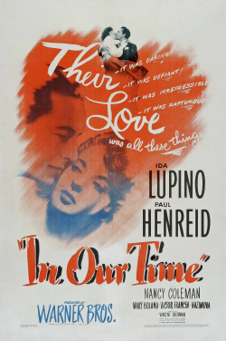
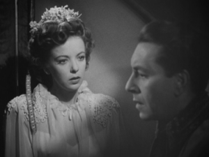

In Our Time (1944) is a film not well known these days. Even amongst Ida Lupino films, it seems obscure, despite being a major production by Warner Bros. at the height of her acting career and directed by a well-regarded director, Vincent Sherman.
Fortunately In Our Time is now available on DVD thanks to Warner Archive--released in mid-2016. Before that, as I learned from re-listening to the Warner Archive podcast episode from its DVD release, it had never been available on home video. This film's availability is welcome news because In Our Time does not deserve to be obscure.
Ida Lupino plays a young Englishwoman employed by a wealthy antique dealer, portrayed by Mary Boland. They are traveling to Warsaw in early 1939 in pursuit of Polish antiques. While there she meets a Polish aristocrat, played by Paul Henreid. The story of their courtship, her travails in meeting his tradition-bound family, and her uncertainty about her decision to marry him, is compelling and very charmingly performed.
Lately, I cannot get enough of Ida Lupino's acting. Her character here is very different from the intense, troubled characters for which she is best known. Rather, here she plays a reserved, thoughtful, and psychologically well-grounded woman. This is not something I even realized until afterwards, as she fit into the role so naturally.
The explicit mention of the early 1939 date lends an ominous underpinning to the romance between Lupino and Henreid, as the 1944 audience knew what lay ahead for Poland in just a few months. These days fewer may understand the timing: Germany invaded Poland on September 1, 1939, triggering World War II.
 In Our Time was filmed in mid-1943 and released in early 1944, during the height of World War II. This story about a few people caught up at the very beginning of the war was thus only a few years old, with an outcome still uncertain. Knowing this lends extra poignancy to the final scenes, which may otherwise come across as heavy-handed propaganda.
In Our Time was filmed in mid-1943 and released in early 1944, during the height of World War II. This story about a few people caught up at the very beginning of the war was thus only a few years old, with an outcome still uncertain. Knowing this lends extra poignancy to the final scenes, which may otherwise come across as heavy-handed propaganda.
My impression after watching In Our Time for the first time over the last couple nights is that it is an excellent character-driven romance for the first two-thirds; then in the last third, the characters are swamped by the larger forces at work. This may well have been how it felt to be alive during this period, when personal concerns could be rendered moot due to the necessity felt by many to fight in the service of a larger cause. I grew to care about Lupino and Henreid's characters, and would have liked to have seen how their story could have played out without Nazi interference. Alas, the war interfered in countless people's lives in horrific ways and cannot be wished away.